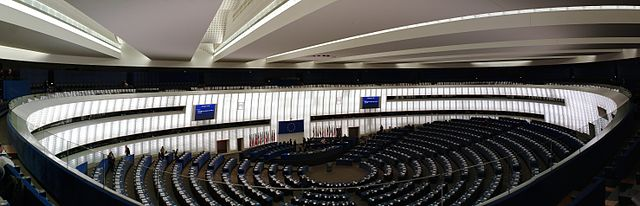

United Kingdom

Dr. Christopher N. Lawrence
Middle Georgia State University
POLS 2301: Comparative Politics
Geography

Today Britain (officially, the United Kingdom of Great Britain and Northern Ireland) comprises four countries within the British Isles:
On the island of Great Britain:
- England (53 million people)
- Scotland (5.3 million)
- Wales (3.1 million)
On the island of Ireland:
- Northern Ireland (1.8 million)
Settlement and Early History
- ~9500 BCE: Human settlement resumes after last glacial period.
- ~600 BCE: Celtic settlement of Britain.
- 43–410 CE: Roman Britain.
- Some cultural influence but little settlement.
- Celtic culture remained in Scotland, Ireland, and Welsh highlands.
- ~450: Invasions of England by the Angles and Saxons (Germanic tribes).

1066 And All That
- 865–954: Vikings rule much of England (the Danelaw).
- 790–1030: Viking invasions and rule of Normandy (part of northern France).
- 1066: Succession crisis in England due to death of Edward the
Confessor without a clear heir.
- Harold Godwinson, Earl of Wessex
- William, Duke of Normandy
The Norman Conquest
Harold attempted to deal with the rival claimants to the throne in Britain, defeating most of them.
Meanwhile, William gathered an army and invaded across the English Channel, defeating and killing Harold at the Battle of Hastings.
William quickly consolidated his position and was crowned King in London on Christmas Day, 1066.
Norman Rule in England
The Normans imposed their own legal and political system on England, based on feudalism; King William rewarded his Norman supporters with land and aristocratic titles.
William's court, and his successors, continued to use French as their language, influencing the evolution of the English language.
William conducted a detailed census of his lands, compiled in the Domesday Book, and used it to impose taxes on his new subjects.
Magna Carta
William's successors struggled to maintain control; each king wanted to rule with an iron fist, but he had to rely on his barons and dukes for taxes and men to fight the king's battles.
In 1215, King John's nobles rebelled. To try to settle the dispute, John signed the Magna Carta or Great Charter, agreeing to respect the feudal rights of the nobility.
The tradition of the Magna Carta made it difficult for future kings to attempt to impose absolutism on Britain.
Parliament and King
The king's need for taxes also required him to summon the nobility and Knights of the Shire to the king's court to gain their assent to new taxes.
These gatherings of the nobility and knights became known as Parliament; the nobility came to comprise the House of Lords while the Knights of the Shire, representatives of the counties, formed the House of Commons.
After Henry VIII broke with Rome, he used Parliament to help legally justify both his new Protestant church and his marital chicanery.
Great Britain under One King

In the 14th century, Edward I had conquered Wales; over the next two centuries, English law was extended to cover Wales as well.
Scotland proved impervious to invasion; however, with the death of Elizabeth I, the closest heir to the English throne was James VI of Scotland, who became James I of England as well in 1603. Scotland kept its own Parliament until 1707.
Ireland under English Rule
.svg) English kings had also begun to
gradually gain control of Ireland, starting from Dublin and
working their way west.
English kings had also begun to
gradually gain control of Ireland, starting from Dublin and
working their way west.
In 1600s, James I promoted the settlement of the north of Ireland by English and Scottish settlers: the Plantation of Ulster.
Unlike Wales, Ireland had its own parliament until 1801, although it was much weaker than England's or Scotland's. Most real power was in the hands of the Lord Lieutenant of Ireland.
Charles I and Civil War

Both James and his son, Charles I, tried to rule England like the Stuart kings had ruled Scotland, in a more absolutist fashion.
Charles' efforts to bully Parliament into raising taxes to support his wars backfired, leading to the English Civil War (1642–48). Parliamentary forces led by Oliver Cromwell captured Charles; eventually Charles was tried and beheaded for treason.
The Commonwealth and the Restoration
.svg) Parliament replaced the monarchy
with the Commonwealth, a republic. Oliver Cromwell, however,
soon disbanded Parliament and ruled as a military dictator under the
title Lord Protector.
Parliament replaced the monarchy
with the Commonwealth, a republic. Oliver Cromwell, however,
soon disbanded Parliament and ruled as a military dictator under the
title Lord Protector.
When Cromwell died, his ineffective son Richard succeeded him. However, the army soon ousted Richard, eventually reinstated the pre-Commonwealth Parliament, and invited Charles' son to return from exile to take the throne, restoring the monarchy.
The Glorious Revolution
Although most were happy to have the monarchy back, King Charles II's pro-Catholic sympathies were unpopular in most of Britain.
When the openly Catholic James II succeeded to the throne in 1685, and had a son who would be raised Catholic in 1688, the idea of a Catholic dynasty was intolerable to Parliament.
English nobles secretly invited the (Protestant) Dutch Prince William to invade the country, and, meeting little resistance in England, he and his wife Mary were soon crowned king and queen.
The Bill of Rights and the Succession
The Glorious Revolution confirmed, once and for all, the supremacy of Parliament; Parliament would ultimately decide, from now on, who would be king or queen.
William and Mary also agreed to the (English) Bill of Rights, which further limited the political power of the monarch and guaranteed Parliament and its members certain rights.
Cabinet Government
When George I became king, he continued to concentrate on events in his native German state of Hanover. He left the affairs of Britain mostly to a cabinet of ministers, led by a prime minister, Sir Robert Walpole. The cabinet would exercise the powers of the Crown in the king's absence.
Although his grandson George III tried to rule a bit more forcefully in Britain—leading, in part, to the American Revolution—the failure of his policies and his poor health allowed Parliament to regain the upper hand.
Unrepresentative Parliament
Although Parliament was now supreme, it was not particularly representative or democratic. Both the conservative Tories and the liberal Whigs were comprised of aristocrats and the well-to-do.
The House of Lords was still full of hereditary peers, while the Commons included dozens of representatives of so-called rotten boroughs. Few non-landowners could vote.
The Reform Acts
In the 1800s, the electorate was gradually expanded by a series of three Reform Acts that abolished rotten boroughs, gave more representation to the new cities that were growing due to industrialization, and allowed more men to vote.
However, no women could vote until 1918 (when, at the same time, all men 21 or older were granted the right to vote), and full adult universal suffrage did not come about until 1928.
The Rise of Labour
- Tories evolved into the Conservative Party.
- Whigs evolved into the Liberal Party.
- Neither represented interests of working-class citizens.
- Labour Party established in 1900, with
support of labor unions. Demands:
- Establishment of a welfare state.
- Nationalization of major sectors of the economy.
- Liberal Party support declined as Labour gained votes.
- Labour's victory in the 1945 election allowed it to pursue this agenda.
Post-War Britain
Post-war economic boom allowed Labour to nationalize industries and build the welfare state.
Conservatives came to accept much of this as inevitable.
Economic crises of 1970s and recovery of Japan and Germany hurt competitiveness of British industry.
Since the 1980s both major parties have pursued reforms to reduce cost of the welfare state and privatize industry, with mixed success.
The British Constitution
Britain lacks a single, codified constitution. The basic principles of British government are a mix of traditions, laws, and customs.
The main institutions are:
- The Monarch
- The Cabinet and Prime Minister
- Parliament
The Monarch
Although the queen (or king), by tradition and law, reigns over the United Kingdom, in practice he or she does not rule. Instead, by custom, the queen only acts on the advice of her ministers, usually the prime minister.
As head of state, the monarch does have an important ceremonial role as the representative of Britain. Even symbolic acts, like Queen Elizabeth II's visit to Ireland in 2011, can have important political consequences.
The Cabinet
Real power is vested in the cabinet or government. Members of the cabinet are typically senior members of the majority party in the House of Commons; most today are members of the Commons, although usually some are members of the House of Lords.
Each member of the cabinet has a portfolio that they are politically responsible for. They may or may not have any particular expertise in that area of government, however; the day-to-day operation of the government agency they head is left up to a senior civil servant instead.
More on The Cabinet
The cabinet practices collective responsibility: disagreements are aired in private, but the cabinet presents a unified front in public.
Typically the most prestigious position in the cabinet, other than the prime minister, is that of the Chancellor of the Exchequer. The Chancellor is responsible for producing the annual budget.
Majority and Coalition Cabinets
Most of the time, Britain has majority governments with only one party, controlling a majority of the seats in the House of Commons, represented in the cabinet.
However, from May 2010 until May 2015, Britain had a coalition government including multiple parties (the Conservative Party and the Liberal Democrats) for the first time since World War II.
Cabinet Responsibility
The cabinet, collectively, is said to be responsible to Parliament. Ministers must account for their actions to the Commons and Lords, and are subject to Question Time where members of each chamber demand answers to their questions about decisions they have made.
If a majority of the Commons decides that the cabinet is no longer fit to rule, they can cast a vote of no confidence in the government; the government is then obliged to resign, and if no new cabinet can be formed quickly, new elections are held.
The Prime Minister
The prime minister is the leader of the government. Today, he or she typically chooses the cabinet, and is ultimately responsible for the performance of the government.
The current prime minister is Theresa May of the Conservative Party, who has been in office since July 2016.
In theory, the prime minister need not be a member of the Commons, but in practice he or she has always been an MP for the past century.
Whips and Party Discipline
Prime ministers appoint whips to keep rank-and-file members of their party (backbenchers) in line and ensure they know how to vote on bills and amendments before Parliament.
Unlike in the U.S., party discipline is very strict in Britain; voting against the party whip even once can lead to an MP being thrown out of the party.
Parliament
Legally, Parliament (the law-making part of the government) consists of:
- The Monarch
- The House of Commons
- The House of Lords
Queen-in-Parliament
The monarch's role today is mostly limited to presiding over the State Opening of Parliament, where she delivers a speech outlining the plans of the prime minister.
The monarch also, in theory, has the power to withhold royal assent from legislation (effectively, vetoing it), although no monarch has done so since Queen Anne in 1708.
Electing the House of Commons
The Commons consists of 650 members, elected via first-past-the-post (plurality) elections from single-member constituencies across the United Kingdom. (After the next election, the size of the Commons will be reduced to 600 seats.)
If an MP dies or resigns, she or he is replaced at a by-election.
By law and constitutional convention, the Commons must hold an election at least once every five years.
Fixed-Term Parliaments
A law passed in 2011 makes it harder for an “early” election to take place:
- Either two-thirds of the total membership of the Commons must vote for an early election to take place, or
- The government must lose a vote of no confidence (unless a new government with the confidence of the Commons is formed within 14 days).
Before this change, prime ministers would often strategically schedule early elections for their party's benefit.
The Role of the Commons
The Commons chamber is arranged so the governing party or coalition sits to the Speaker's right and the Opposition, the largest party not in the Government, sits to the left; members of the other non-government parties usually also sit on the left, to symbolize their opposition to the government.
The Opposition appoints a shadow cabinet of party spokespeople, who typically ask questions during Question Time.
Backbenchers and the Speaker
Members of the Cabinet and Shadow Cabinet are called frontbenchers, since they sit on the front row near the speaker; rank-and-file MPs are called backbenchers.
The Speaker—unlike his or her American counterpart—is politically neutral; even at subsequent elections, the Speaker runs for reelection as an independent member.
Committees in the Commons
Unlike in the U.S., committees in the Commons are relatively weak and a fairly new innovation. Because of party discipline, the prime minister usually gets his way on legislation.
Instead, Commons committees typically scrutinize government agencies and the bureaucracy. They may also look into scandals and illegal conduct by the Government.
Frontbench MPs typically are not members of committees since they have other responsibilities (or it would be a conflict of interest).
The House of Lords
Today, the House of Lords consists of 789 peers, the vast majority of whom are life peers. The hereditary peers, over 800 aristocrats who inherited their title, choose 92 representative peers to sit in the Lords on their behalf.
What do the Lords do?
Historically, the Lords was roughly equal in power with the Commons. For the past century, however, the Lords has only had the power to delay—not completely block—legislation proposed by the Commons.
However, the Lords play an important role in scrutinizing legislation proposed by the Government; in some ways, they work more like committees in the U.S. Congress than Commons committees do.
Reforming the Lords?
Reform of the House of Lords to make it a more democratic institution has been debated, off-and-on, for years. Although all of the parties agree it should be reformed, a lack of agreement on how the Lords should be reformed has led to a lack of action.
Many fear an elected upper house would either overshadow the Commons or become a dumping ground for mediocre politicians—much like the European Parliament is perceived.
Abolition is also an option; the devolved assemblies are all unicameral, as are some national parliaments today.
Devolution and Quasi-Federalism
.svg)
In the past two decades, Britain has devolved power over many domestic matters from the government in London to elected assemblies in Scotland, Wales, and Northern Ireland.
Powers devolved include education, health care, transportation, economic development, and language policy.
Powers of Devolved Governments
Each devolved assembly selects its own government, headed by a first minister, responsible for day-to-day governing and setting the policy agenda.
The powers of each assembly are a bit different; Scotland generally has the most independent power (and its assembly is called a Parliament, unlike the other two), while the Welsh and Northern Irish assemblies have a bit less.
Devolution in Northern Ireland
In Northern Ireland, rules require power sharing between the Protestant and Catholic communities. All cabinets are coalitions including both Unionist and Nationalist parties.
Designed to avoid a recurrence of the Protestant domination that took place when Northern Ireland was under “home rule” from 1921 to 1972 and the subsequent Troubles.
Devolution in England?

Although there was a proposal to set up regional assemblies across England about a decade ago, the only one that was established was for Greater London.
Debate over whether all UK MPs should vote on laws that only affect England—called the “West Lothian Question”—has led to discussion of whether there should be a separate English Parliament as well.
The European Parliament
Like the other members of the European Union, Britain also elects representatives to the European Parliament in Strasbourg, France.
The European Parliament was originally little more than a discussion forum, but today has important powers to scrutinize the EU's “executive branch” (the European Commission) and laws proposed by the representatives of Europe's governments, the Council of Ministers.
Political Parties
In most of the United Kingdom (except Northern Ireland), the most important political parties that contest elections are, in rough order of popularity:
- The Conservative Party (or Tories).
- The Labour Party.
- The Liberal Democratic Party (formed when the old Liberal Party merged with a short-lived party of moderate ex-Labour Party members in the 1980s).
- The UK Independence Party (UKIP), generally socially conservative and opposed to European integration.
- The Green Party.
The Scottish National Party
In addition to the main U.K. parties, the most important party in Scotland is the Scottish National Party. Unlike the U.K.-wide parties that are unionist, the SNP favors an independent Scotland within the European Union.
In 2014, the SNP government in Scotland held a referendum on Scottish independence, which saw approximately 55% of Scottish voters vote “No” on independence.
The SNP competes for seats in the UK Parliament, Scottish Parliament, and EU Parliament, as well as local governments in Scotland.
Plaid Cymru
In Wales, the pro-independence Plaid Cymru (Welsh for “Party of Wales”) favors Welsh independence within the European Union.
Plaid Cymru competes for seats in the UK Parliament, Welsh Assembly, and EU Parliament, as well as local governments in Wales.
Parties in Northern Ireland
UK-wide parties don't typically seek office in Northern Ireland.
- Two unionist (or loyalist) parties favor Northern Ireland remaining part of the U.K.: the Ulster Unionist Party (UUP) and the Democratic Unionist Party (DUP).
- Two nationalist parties favor reunification of Ireland and Northern Ireland as a single country: the Social Democratic and Labour Party (SDLP) and Sinn Fein.
- The small Alliance Party opposes sectarianism and supports peaceful coexistence between the Catholic and Protestant communities.
Elections and the Party System
Despite the large number of parties, the Commons is typically dominated by the Conservatives and Labour.
The first-past-the-post or plurality voting system with single member districts means that the largest party usually gets a majority of seats at Westminster, even if it only gets 40–45% of the vote.
Elections and the Party System
More parties are represented in the devolved assemblies; they (along with the European Parliament) use proportional representation (PR) systems where elections are designed to ensure that the percentage of seats a party earns is roughly proportional with their share of the vote.
PR helps ensure minor parties get their fair share of seats, but it also usually means that one party doesn't have enough seats to rule on its own; instead, in PR systems, coalition governments are routine.
#Brexit

52% of voters supported withdrawing from the European Union in June 2016 referendum.
Result not legally binding but current government has pledged to withdraw.
- Exit negotiations may be complex:
- Politicians, voters want continued access to Common Market.
- EU may want substantial concessions on free movement of labor, monetary contributions to EU members.
Divisions in British Society
Social class: importance of class has declined, but still prominent in politics today.
Region: urban/rural divisions and division between England and the rest of the U.K., particularly Scotland.
Public services: maintaining the NHS is an increasing financial drain on governments, but fees and privatization are unpopular.
Immigration: migrants from Eastern Europe and the developing world are changing Britain's demographics, particularly in the big cities of England.
Copyright and License
The text and narration of these slides are an original, creative work, Copyright © 2015–16 Christopher N. Lawrence. You may freely use, modify, and redistribute this slideshow under the terms of the Creative Commons Attribution-Share Alike 4.0 International license. To view a copy of this license, visit http://creativecommons.org/licenses/by-sa/4.0/ or send a letter to Creative Commons, 444 Castro Street, Suite 900, Mountain View, California, 94041, USA.
Other elements of these slides are either in the public domain (either originally or due to lapse in copyright), are U.S. government works not subject to copyright, or were licensed under the Creative Commons Attribution-Share Alike license (or a less restrictive license, the Creative Commons Attribution license) by their original creator.
Works Consulted
The following sources were consulted or used in the production of one or more of these slideshows, in addition to various primary source materials generally cited in-place or otherwise obvious from context throughout; previous editions of these works may have also been used. Any errors or omissions remain the sole responsibility of the author.
- Michael G. Roskin. 2013. Countries and Concepts: Politics, Geography, Culture, 12th ed. Upper Saddle River, New Jersey: Pearson.
- Various Wikimedia projects, including the Wikimedia Commons, Wikipedia, and Wikisource.